Getting started¶
Tip
If you are new to GIS4WRF, we recommend you to start with the tutorials section.
After you have installed and configured GIS4WRF, you can find all the features and tools in two separate menus and a single container — referred to as dock. A summary of features and tools is given in the tables below under Menu items and Dock items.
Assumptions
GIS4WRF requires users to be familiar with basic concepts of meteorology and numerical modelling. Users should be familiar with the WPS WRF processing workflow. GIS4WRF is meant to simplify and empower users to carry out specialized and time-consuming tasks.
Draft version
This documentation is a draft. Please let us know if you find something missing, unclear, or incorrect by opening an issue on GitHub.
Menu items¶
The location and description of each menu item can be found in the tables below.
Plugins menu¶
| QGIS Menus | Action |
|---|---|
Plugins > GIS4WRF > GIS4WRF |
Launch GIS4WRF Dock |
Plugins > GIS4WRF > About |
Changelog and license information |
Plugins > GIS4WRF > Report a bug |
Link to GIS4WRF's issue system on GitHub |
Click to view the Plugins menu
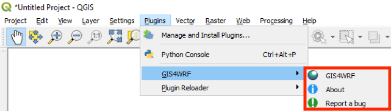
Layer menu¶
| QGIS Menus | Action |
|---|---|
Layers > Add Layer > Add WRF NetCDF Layer... |
Load WRF-NetCDF dataset into QGIS |
Layers > Add Layer > Add WPS Binary Layer... |
Load WPS Binary dataset into QGIS |
Click to view the Layer menu
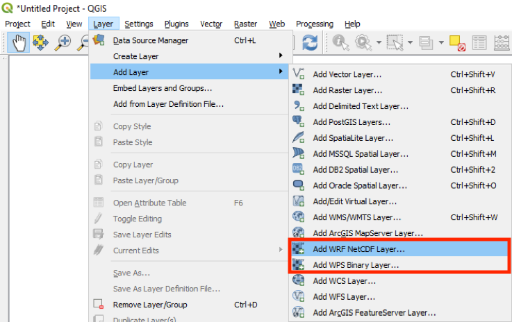
Dock items¶
The GIS4WRF dock can be launched from the Plugins > GIS4WRF > GIS4WRF menu. There you can find most of the features and tools to pre-process data, configure domains, run WPS and WRF programs, and visualize your simulation results. The location and description of each tab and sub-tabs can be found in the table below.
| GIS4WRF Dock | Action |
|---|---|
Home |
View documents and tutorials |
Datasets > Geo |
Download WPS geographical datasets |
Datasets > Met |
Download meteorological datasets from NCAR's RDA |
Datasets > Process |
Convert raster data (e.g. GeoTIFF) into WPS geographical datasets |
Simulation > General |
Create or open GIS4WRF projects |
Simulation > Domain |
Create, import and export domains |
Simulation > Data |
Define geographical and meteorological datasets to use in simulation |
Simulation > Run |
Pre-populate, check and export namelists and run WPS and WRF programs |
View |
Visualize and post-process WPS and WRF input or outputs |
Home¶
The home tab is used to provide offline documentation and tutorials.
Click to view the Home tab
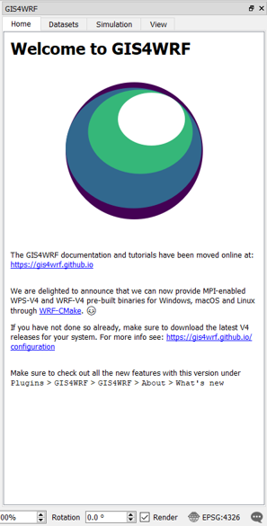
Datasets¶
The Datasets tab is composed of three main subtabs: Geo, Met, and Process. In these subtabs, you can find tools to download standard Geogrid binary datasets (also referred to as 'static data'), download meteorological datasets using the integration with NCAR's Research Data Archive (RDA), and convert geo-referenced data (e.g. GeoTIFF) to Geogrid binary format.
Geo¶
The Geo subtab is used to download standard Geogrid binary datasets (i.e.from http://www2.mmm.ucar.edu/wrf/users/download/get_sources_wps_geog.html) locally. The Geogrid binary datasets are downloaded and saved in the GIS4WRF working directory under <GIS4WRF_WORKING_DIRECTORY>/datasets/geog
Click to view the Geo subtab
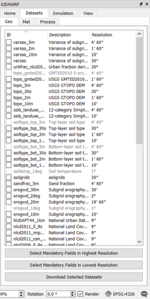
Met¶
The Met subtab is used to download NCAR datasets supported by WPS from NCAR's Research Data Archive (RDA). A valid RDA account is required to use this utility and the username and password must be set — for more information see the configuration section. A list of currently supported datasets can found in the table below:
Click to view the Met subtab
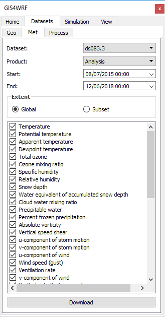
When the dataset name is selected, the available product names for the specific dataset become available. Start and end date and time are automatically restricted to the available periods for the specific dataset. Requests can be spatially subsetted by clicking on the subset button. When the Download button is clicked, the request will be automatically sent to RDA and downloaded when the files become available (Note that if the request is large it may take several minutes before the data becomes available). Data are downloaded and saved in the GIS4WRF working directory under <GIS4WRF_WORKING_DIRECTORY>/datasets/met.
Process¶
The Process subtab contains a tool to convert from QGIS raster layers to WPS binary format data. The tool supports the conversion of both categorical, and continuous data.
Click to view the Process subtab
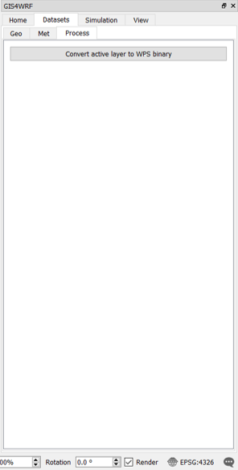
Simulation¶
The Simulation tab contains tools to help you prepare your simulations. Here, you will find four subtabs: General, Domain, Data, and Run. In General, you can create and open existing GIS4WRF projects. The Domain, Data, and Run subtabs contain tools to help you define and run a WRF simulation such as defining datasets to use in your simulation, configure namelists and run WPS and WRF programs.
General¶
Used to create a new, or to open an existing GIS4WRF project. By default a project is created inside the GIS4WRF default working directory.
Click to view the General subtab
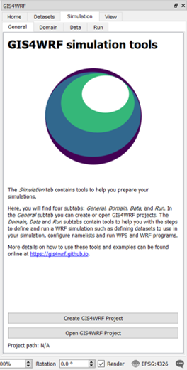
Domains¶
Used to easily create, import, and export WRF domains through a GUI interface. This configuration will be used to generate the relevant sections in namelist.wps and namelist.wrf.
Click to view the Domain subtab
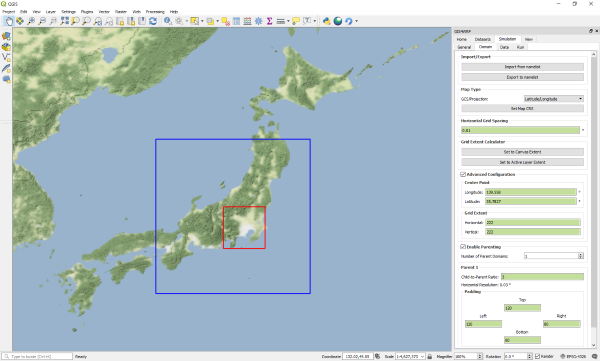
- Import/Export
Import from namelist button: reads a namelist.wps file and populates the fields
Export to namelist button: exports domain configuration to a namelist.wps file
- Map Type
GCS/Projection dropdown: allows users to define the type Geographical Coordinate System (GCS) or Projection to use for creating the domain. Current supported GCS/Projections are Latitude/Longitude, Lambert Conformal, Mercator, Polar Stereographic. If Lambert Conformal is selected, the two true latitudes (True Latitude 1 and True Latitude 2) and the Standard Longitude values are required. If Polar Stereographic is selected, the True Latitude 1 and the Standard Longitude values are required.
Set Map CRS button: set QGIS Project Coordinate Reference System (CRS) based on selected GCS/Projection
- Horizontal Grid Spacing
Domain horizontal grid spacing in decimal degrees (°) for Latitude/Longitude or in meters (m) for Lambert
- Grid Extent Calculator
Set to Canvas Extent allows the user to set the domain center-point Longitude, Latitude, and the grid extent Horizontal and Vertical to the QGIS canvas extent. The extent can be modified in Advanced Configuration (see next section).
Set to Active Layer Extent allows the user to set the domain center-point Longitude, Latitude, and the grid extent Horizontal and Vertical to the extent of the active layer in QGIS. The extent can be modified in Advanced Configuration (see next section).
- Advanced Configuration
When checked, it enables the user to manually set the center-point latitude and longitude in decimal degrees (°), and the horizontal and vertical gird extent for the inner-most domain.
- Enable Parenting
When checked, it enables the user to create nested-type domains. The number of parent domains can be selected (min:1, max:21). The user must set the child-to-parent ratio as well as the padding. The horizontal resolution for the parent domain is calculated automatically based on the resolution of the child domain. NB: GIS4WRF calculates nesting opposite to the standard way of creating domains in WRF — parent domains are created based on the location, extent and resolution of the child domain.
Data¶
Used to set datasets to be added in the configuration of namelists.
Click to view the Data subtab
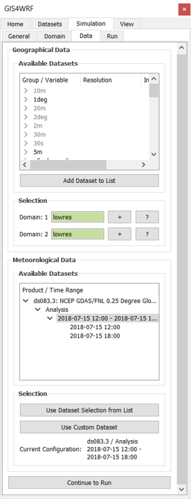
-
Geographical Data For each domain, the type of geographical data is selected by clicking on the
+button next to each domain. Optionally, underAdd Dataset, a new dataset can be imported to be used in the simulation. This configuration will be used to generate the relevant section innamelist.wpsandGEOGRID.TBL. -
Meteorological Data The meteorological data is shown under the
Available Datasetand added by selecting the dataset and time range to be used in the simulation, and clicking on theUse dataset selection from listbutton. This configuration will be used to generate the relevant sections innamelist.wpsandnamelist.wrf.
External or local datasets can be imported using the Use Custom Dataset button.
Click to view how to import external met datasets

Run¶
The run tab is used to run WPS and WRF programs with the configuration generated by GIS4WRF. Sections of namelists such as physics options can be edited by clicking on the Open Configuration button. The output is displayed in the integrated Program output window.
Click to view the Run subtab
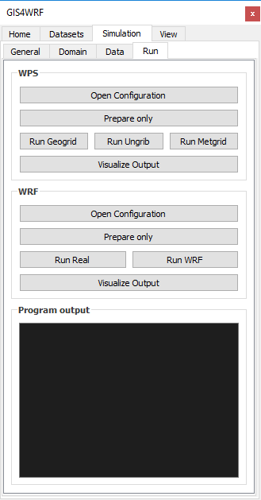
View Tab¶
WRF NetCDF datasets can be opened under QGIS > Layers > Add Layer > Add WRF NetCDF Layer.... Variables included in WRF NetCDF datasets are shown as a list in the View tab. The time slider at the end of the list of variables provides a fast way to slice through different time stamps. For variables that include vertical levels, the Vertical Level dropdown menu will become selectable.
Click to view the View tab
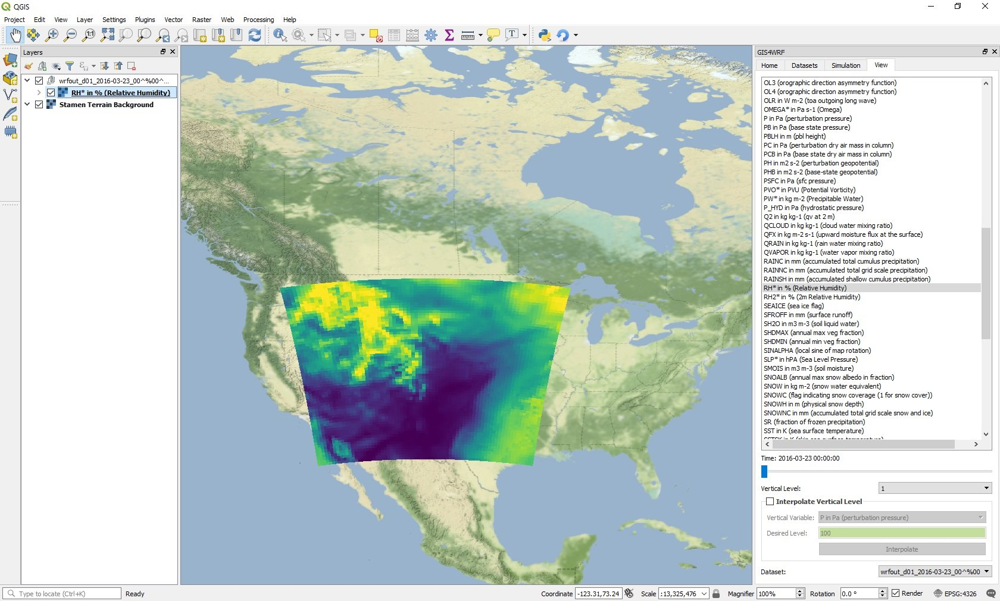
Experimental integration with wrf-python¶
GIS4WRF provides the following additional features when wrf-python is available:
- Vertical interpolation of variables
- Generation of derived variables
Experimental
Due to lack of Python binary wheels, wrf-python is not available by default when installing GIS4WRF. No support is provided on how to install wrf-python into the QGIS Python environment.
Vertical interpolation options can be chosen by selecting the variable name and enabling the Interpolate Vertical Level check-box.
The following derived variables are generated using wrf-python:
| Variable Name | Description |
|---|---|
| AVO | Absolute Vorticity |
| DBZ | Radar Reflectivity |
| ETH | Equivalent Potential Temperature |
| GEOPT | Geopotential for Mass Grid |
| HELICITY | Storm Relative Helicity |
| MDBZ | Maximum Radar Reflectivity |
| Omega | |
| PVO | Potential Vorticity |
| PW | Precipitable Water |
| RH | Relative Humidity |
| RH2 | Relative Humidity at 2 m |
| SLP | Sea Level Pressure |
| TC | Temperature |
| TD | Dew Point Temperature |
| TD2 | Dew Point Temperature at 2 m |
| TH | Potential Temperature |
| TH2 | Potential Temperature at 2 m |
| TK | Temperature |
| TV | Virtual Temperature |
| TWB | Wet Bulb Temperature |
| UA | U-component of Wind on Mass Points |
| VA | V-component of Wind on Mass Points |
| WA | W-component of Wind on Mass Points |
| Z | Model Hight |